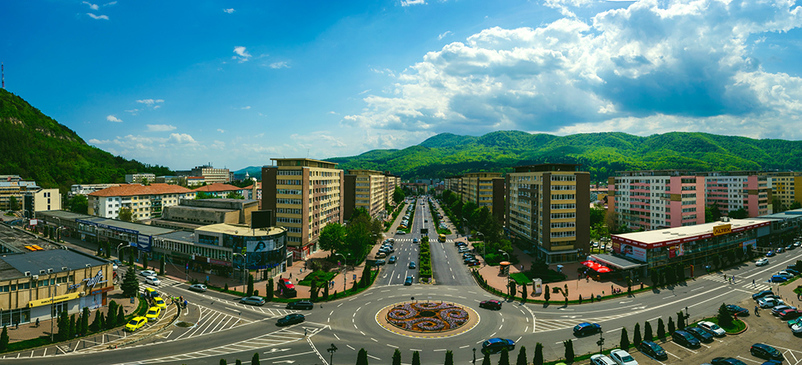
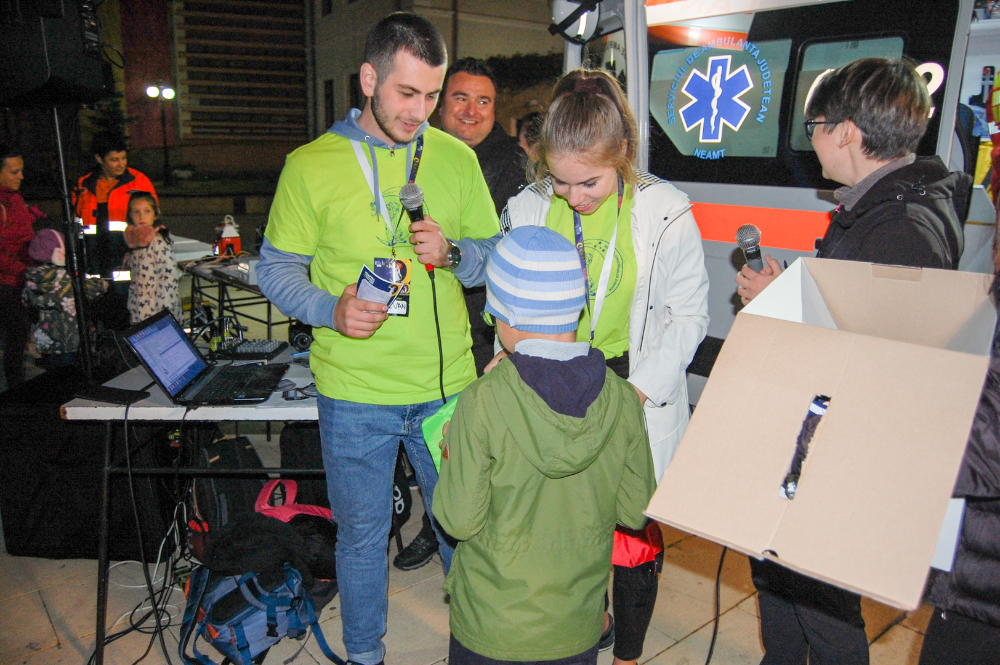

My name is Albertina Elena Ripanu. I am from Romania and my hometown is called Piatra Neamt. It is very nice if you ask me. It has a lot of mountains around it and it is always full of activity.

Now, I am going to tell you shortly what I've done in Romania.
Well...For three years, I've been in the town's athletics team called "Ceahlau".
I had the pleasure to be a volunteer at the European Researcher's Night and in 2019,
to be the organizer student of the event. I enjoy drawing but unfortunately
I left all my work in Romania. I listen to a lot of music and I hope I will join
very soon to a music society.At this moment I am a student at Computer Science ,
at University of Sheffield. I enjoy beeing a student in Sheffield. This web-site will be about
my degree and how much time I do spend learning new programming languages.
